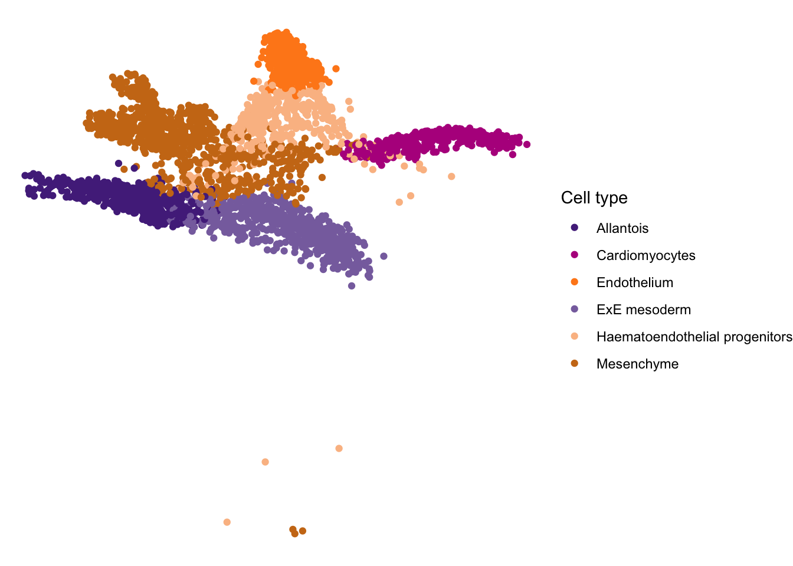
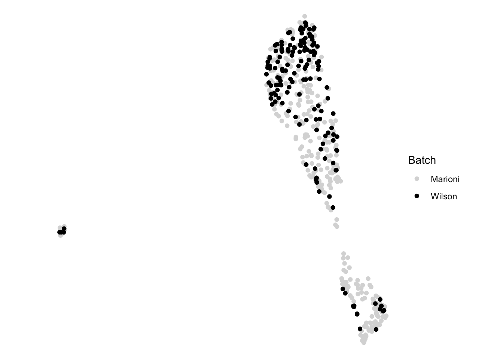
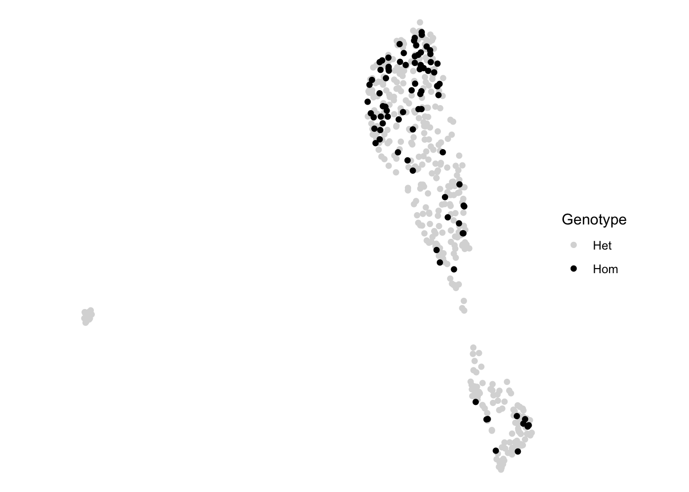
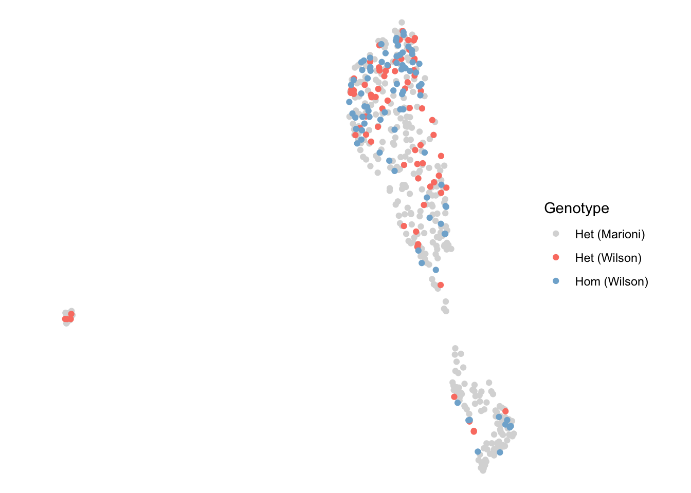
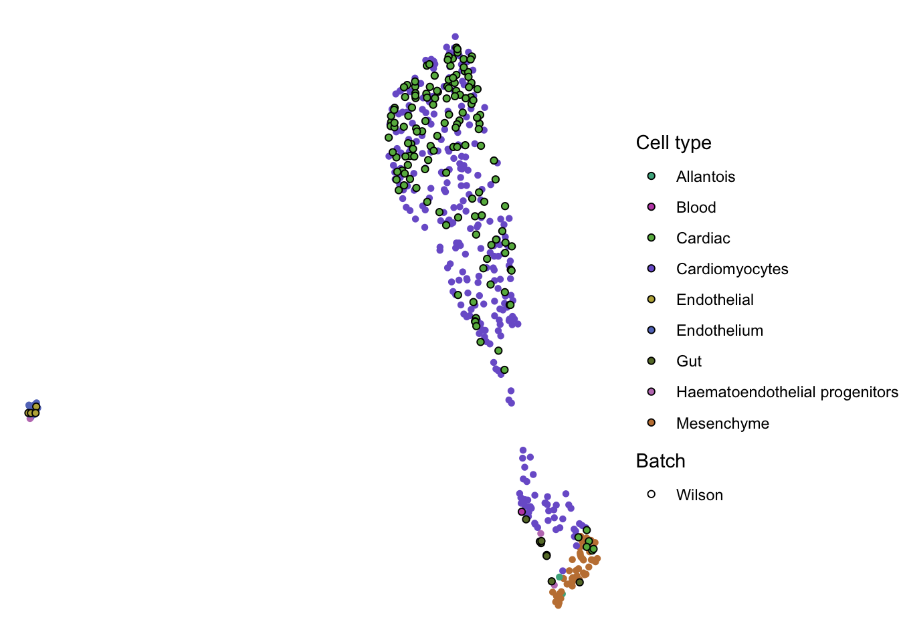
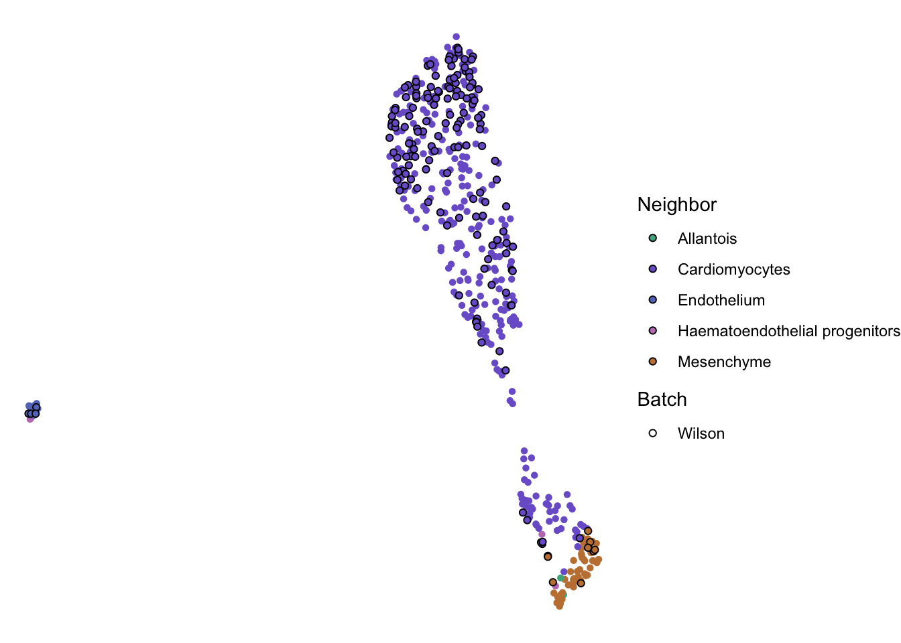
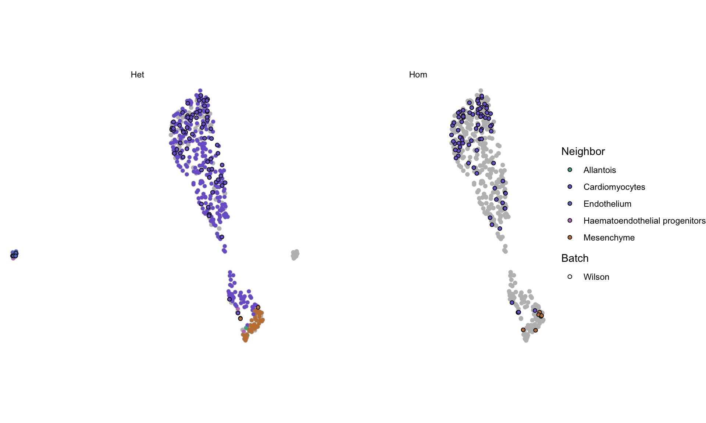

Last updated: 2019-12-15
Checks: 5 2
Knit directory: Heart/
This reproducible R Markdown analysis was created with workflowr (version 1.5.0). The Checks tab describes the reproducibility checks that were applied when the results were created. The Past versions tab lists the development history.
The R Markdown is untracked by Git. To know which version of the R Markdown file created these results, you’ll want to first commit it to the Git repo. If you’re still working on the analysis, you can ignore this warning. When you’re finished, you can run wflow_publish to commit the R Markdown file and build the HTML.
Great job! The global environment was empty. Objects defined in the global environment can affect the analysis in your R Markdown file in unknown ways. For reproduciblity it’s best to always run the code in an empty environment.
The command set.seed(1701) was run prior to running the code in the R Markdown file. Setting a seed ensures that any results that rely on randomness, e.g. subsampling or permutations, are reproducible.
Nice! There were no cached chunks for this analysis, so you can be confident that you successfully produced the results during this run.
Great job! Using relative paths to the files within your workflowr project makes it easier to run your code on other machines.
Great! You are using Git for version control. Tracking code development and connecting the code version to the results is critical for reproducibility. The version displayed above was the version of the Git repository at the time these results were generated.
Note that you need to be careful to ensure that all relevant files for the analysis have been committed to Git prior to generating the results (you can use wflow_publish or wflow_git_commit). workflowr only checks the R Markdown file, but you know if there are other scripts or data files that it depends on. Below is the status of the Git repository when the results were generated:
Ignored files:
Ignored: .DS_Store
Ignored: .Rhistory
Ignored: .Rproj.user/
Ignored: analysis/.DS_Store
Ignored: analysis/cache/
Ignored: code/.DS_Store
Ignored: data/
Ignored: shiny/
Untracked files:
Untracked: analysis/01-analysis.Rmd
Untracked: analysis/02-analysis.Rmd
Untracked: analysis/03-analysis.Rmd
Untracked: analysis/04-analysis.Rmd
Untracked: analysis/05-analysis.Rmd
Untracked: analysis/06-analysis.Rmd
Note that any generated files, e.g. HTML, png, CSS, etc., are not included in this status report because it is ok for generated content to have uncommitted changes.
There are no past versions. Publish this analysis with wflow_publish() to start tracking its development.
Set knitr chunk options:
knitr::opts_chunk$set(
autodep = TRUE,
cache = TRUE,
cache.path = "cache/04-analysis/",
dev = "png",
error = FALSE,
message = FALSE,
warning = FALSE
)Load required analysis packages:
pacman::p_load(batchelor, gam, here, readr, scater, scran, slingshot, RColorBrewer, pheatmap)Load the MouseGastrulationData package:
pacman::p_load(MouseGastrulationData)Modify colour palette to include unassigned and unknown cells:
EmbryoCelltypeColours <- c(EmbryoCelltypeColours, unassigned = "#999999", unknown = "#999999")Select samples from embryonic stage E8.25:
sel <- subset(AtlasSampleMetadata, stage == "E8.25")Obtain processed counts from the dataset:
ref <- EmbryoAtlasData(type = "processed", samples = sel$sample)Select cell types from the dataset:
sel <- c("Mixed mesoderm", "Cardiomyocytes", "Allantois", "ExE mesoderm", "Mesenchyme", "Haematoendothelial progenitors", "Endothelium")Filter processed counts for select cell types:
ref <- ref[, ref$celltype %in% sel]Remove cells with no defined cell type:
nan <- is.na(ref$celltype)
ref <- ref[, !nan]Compute log-transformed normalized expression values:
ref <- logNormCounts(ref)Change dimension names to those required by the scater package:
reducedDimNames(ref) <- c("PCA", "UMAP")Plot UMAP showing all the selected cells:
plt <- plotUMAP(ref, colour_by = "celltype")
ggplot(plt$data, aes(X, Y)) +
geom_point(aes(colour = colour_by)) +
scale_colour_manual(name = "Cell type", values = EmbryoCelltypeColours) +
theme_void() +
theme(aspect.ratio = 1)
Load the Heart dataset:
sce <- read_rds(here("data/annotation.Rds"))Clear spike-in information across batches:
ref <- clearSpikes(ref)
sce <- clearSpikes(sce)Filter batches to contain same genes:
rownames(ref) <- rowData(ref)$ENSEMBL
rownames(sce) <- rowData(sce)$gene_id
ids <- intersect(rownames(ref), rownames(sce))
ref <- ref[ids, ]
sce <- sce[ids, ]Select genes with positive average biological components:
mod <- model.matrix(~ pool + sample, data = colData(ref))
dec <- combineVar(modelGeneVar(ref, design = mod), modelGeneVar(sce, block = sce$phase))
hvg <- rownames(dec)[dec$bio > 0]Rename cells from query and reference data:
colnames(sce) <- paste0("wilson-", seq_len(ncol(sce)))
colnames(ref) <- paste0("marioni-", seq_len(ncol(ref)))Correct for batch effects using a fast version of the MNN method:
mnn <- fastMNN(ref, sce, pc.input = TRUE, subset.row = hvg)
reducedDimNames(mnn) <- "MNN"Incorporate raw and log counts from original data:
assay(mnn, "counts") <- cbind(assay(ref[hvg, ], "counts"), assay(sce[hvg, ], "counts"))
assay(mnn, "logcounts") <- cbind(assay(ref[hvg, ], "logcounts"), assay(sce[hvg, ], "logcounts"))Annotate merged dataset with metadata:
#Batch
mnn$batch <- ifelse(mnn$batch == 1, "Marioni", "Wilson")
# Celltype
mnn$celltype <- c(ref$celltype, sce$cellassign_celltype)
# Genotype
mnn$genotype <- "Het"
mnn$genotype[mnn$batch == "Wilson"] <- sce$genotype
# Pool
mnn$pool <- NA
mnn$pool[mnn$batch == "Marioni"] <- ref$pool
# Sample
mnn$sample <- NA
mnn$sample[mnn$batch == "Marioni"] <- ref$sample
# Phase
mnn$phase <- NA
mnn$phase[mnn$batch == "Wilson"] <- sce$phaseChoose optimal K from reference cells:
dim <- reducedDim(mnn, "MNN")[mnn$batch == "Marioni", ]
colnames(dim) <- paste0("PC", seq_len(ncol(dim)))
dim <- as.data.frame(dim)
fct <- mnn$celltype[mnn$batch == "Marioni"]
mod <- caret::trainControl(
method = "LGOCV",
p = 0.7,
number = 1,
savePredictions = TRUE
)
grd <- expand.grid(k = seq(1, 100, by = 2))
set.seed(1701)
fit <- caret::train(x = dim, y = fct, method = "knn", tuneGrid = grd, trControl = mod)
num <- fit$bestTune$kIdentify kNN from reference cells:
sbj <- reducedDim(mnn, "MNN")[mnn$batch == "Marioni", ]
qry <- reducedDim(mnn, "MNN")[mnn$batch == "Wilson", ]
knn <- BiocNeighbors::queryKNN(sbj, qry, k = num)Annotate cell type using kNN cells:
nan <- rep(NA, ncol(sce))
mnn$neighbor <- c(ref$celltype, nan)
lab <- apply(knn$index, 1, function(x) names(which.max(table(ref$celltype[x]))))
mnn$neighbor[mnn$batch == "Wilson"] <- labFilter merged dataset to k closest cells:
id1 <- which(mnn$batch == "Wilson")
len <- seq_len(num)
id2 <- as.vector(knn$index[, len])
idx <- c(id1, id2)
idx <- unique(sort(idx))
mnn <- mnn[, idx]Perform UMAP on the PCA data from the combined dataset:
set.seed(1701)
mnn <- runUMAP(mnn, n_neighbors = 50, dimred = "MNN")Plot UMAP showing batch annotation:
plt <- plotUMAP(mnn, colour_by = "batch")
col <- c("Marioni" = "#d9d9d9", "Wilson" = "#000000")
ggplot(plt$data, aes(X, Y)) +
geom_point(aes(colour = colour_by)) +
scale_colour_manual(name = "Batch", values = col) +
theme_void() +
theme(aspect.ratio = 1)
Plot UMAP showing genotype annotation:
plt <- plotUMAP(mnn, colour_by = "genotype")
col <- c("Het" = "#D9D9D9", "Hom" = "#000000")
ggplot(plt$data, aes(X, Y)) +
geom_point(aes(colour = colour_by)) +
scale_colour_manual(name = "Genotype", values = col) +
theme_void() +
theme(aspect.ratio = 1)
Plot UMAP showing batch + genotype annotation:
plt <- plotUMAP(mnn)
plt$data$colour_by <- paste0(mnn$batch, "-", mnn$genotype)
col <- c("Marioni-Het" = "#D9D9D9", "Wilson-Het" = "#fb8072", "Wilson-Hom" = "#80b1d3")
lab <- c("Marioni-Het" = "Het (Marioni)", "Wilson-Het" = "Het (Wilson)", "Wilson-Hom" = "Hom (Wilson)")
ggplot(plt$data, aes(X, Y)) +
geom_point(aes(colour = colour_by)) +
scale_colour_manual(name = "Genotype", values = col, labels = lab) +
theme_void() +
theme(aspect.ratio = 1)
Plot UMAP showing celltype annotation:
plt <- plotUMAP(mnn)
plt$data$fill_by <- mnn$celltype
plt$data$colour_by <- mnn$batch
col <- c(
"Allantois" = "#4cb08d",
"Blood" = "#c04fb4",
"Cardiac" = "#67b54e",
"Cardiomyocytes" = "#7b62d0",
"Endothelial" = "#bcaf46",
"Endothelium" = "#6479c3",
"ExE mesoderm" = "#ce5137",
"Extraembryonic ectoderm" = "#54acd8",
"Extraembryonic mesoderm" = "#d34379",
"Gut" = "#667934",
"Haematoendothelial progenitors" = "#c07ebe",
"Mesenchyme" = "#c38041",
"Mesothelium" = "#bd606e"
)
pch <- c("Marioni" = "transparent", "Wilson" = "#000000")
ggplot(plt$data, aes(X, Y)) +
geom_point(aes(fill = fill_by, colour = colour_by), shape = 21) +
scale_fill_manual(name = "Cell type", values = col) +
scale_colour_manual(name = "Batch", values = pch, limits = "Wilson") +
theme_void() +
theme(aspect.ratio = 1)
Plot UMAP showing neighbour and batch annotation:
plt <- plotUMAP(mnn)
plt$data$fill_by <- mnn$neighbor
plt$data$colour_by <- mnn$batch
col <- c(
"Allantois" = "#4cb08d",
"Blood" = "#c04fb4",
"Cardiac" = "#67b54e",
"Cardiomyocytes" = "#7b62d0",
"Endothelial" = "#bcaf46",
"Endothelium" = "#6479c3",
"ExE mesoderm" = "#ce5137",
"Extraembryonic ectoderm" = "#54acd8",
"Extraembryonic mesoderm" = "#d34379",
"Gut" = "#667934",
"Haematoendothelial progenitors" = "#c07ebe",
"Mesenchyme" = "#c38041",
"Mesothelium" = "#bd606e"
)
pch <- c("Marioni" = "transparent", "Wilson" = "#000000")
ggplot(plt$data, aes(X, Y)) +
geom_point(aes(fill = fill_by, colour = colour_by), shape = 21) +
scale_fill_manual(name = "Neighbor", values = col) +
scale_colour_manual(name = "Batch", values = pch, limits = "Wilson") +
theme_void() +
theme(aspect.ratio = 1)
Plot UMAP showing neighbour, batch, and genotype annotation:
plt <- plotUMAP(mnn)
plt$data$fill_by <- mnn$neighbor
plt$data$colour_by <- mnn$batch
plt$data$facet_by <- mnn$genotype
col <- c(
"Allantois" = "#4cb08d",
"Blood" = "#c04fb4",
"Cardiac" = "#67b54e",
"Cardiomyocytes" = "#7b62d0",
"Endothelial" = "#bcaf46",
"Endothelium" = "#6479c3",
"ExE mesoderm" = "#ce5137",
"Extraembryonic ectoderm" = "#54acd8",
"Extraembryonic mesoderm" = "#d34379",
"Gut" = "#667934",
"Haematoendothelial progenitors" = "#c07ebe",
"Mesenchyme" = "#c38041",
"Mesothelium" = "#bd606e"
)
pch <- c("Marioni" = "transparent", "Wilson" = "#000000")
ggplot(plt$data, aes(X, Y)) +
geom_point(data = plt$data[, 1:4], mapping = aes(X, Y), colour = "grey") +
geom_point(aes(fill = fill_by, colour = colour_by), shape = 21) +
facet_wrap(~ facet_by, scales = "fixed") +
scale_fill_manual(name = "Neighbor", values = col) +
scale_colour_manual(name = "Batch", values = pch, limits = "Wilson") +
theme_void() +
theme(aspect.ratio = 1)
Save merged dataset for further exploration:
write_rds(mnn, here("data/04-analysis.rds"))